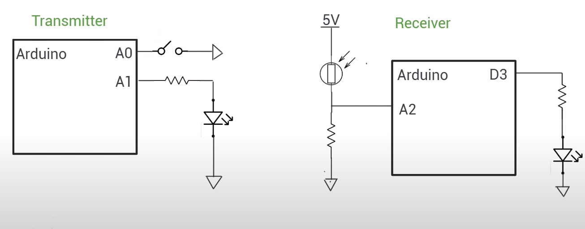

Light-Based Data Transmission (Li-Fi)
An optical wireless communication system to transmit text data using visible light (LED) to a solar cell.

Demo Video
Video demonstration of text being transmitted via LED and displayed on the receiver's LCD.
Project Overview
This project demonstrates a proof-of-concept for an optical wireless communication system capable of transmitting and receiving text data using visible light. The transmitter module encodes text data into a serial bit stream by blinking an LED, while the receiver module decodes the light signal using a solar cell and reconstructs the original text data.
View Project on GitHubComponents Used
- 2 x Arduino Uno boards
- 2 x Solderless Breadboard
- 1 x 5mm White LED
- 1 x Solar Cell (or Photo-resistor)
- 1 x 16x2 LCD Display with I2C interface
- Jumper wires & Power Supply
- (Optional) Resistors, capacitors for solar cell amplifier circuit
Working Principle
Transmitter
- Reads a predefined text string from memory.
- Converts each character into its 8-bit ASCII binary representation.
- Turns the LED on and off rapidly to transmit each bit serially.
- Adds a start bit (LED off) and a stop bit (LED on) to each byte for synchronization.
- Transmits the entire string repeatedly in a loop.
- Baud Rate: ~100 bits/second (1200 baud).
Receiver
- Solar cell generates a varying analog voltage based on received light.
- Arduino monitors this voltage using its Analog-to-Digital Converter (ADC).
- Voltage levels are sampled at the specified baud rate.
- Sampled bits are reconstructed into bytes by detecting start/stop bits.
- Received bytes are interpreted as ASCII characters.
- Valid characters are displayed on the 16x2 LCD screen.
- Sampling Rate: 200 samples/second.
Circuit Diagram
Diagram showing the transmitter (LED) and receiver (Solar Cell + LCD) circuits.
Installation and Usage
- Connect components as per the circuit diagram.
- Upload `transmitter.ino` and `receiver.ino` to their respective Arduino boards.
- Open the Serial Monitor on the receiver side for debugging.
- The transmitted text should be displayed on the LCD screen in real-time.
- Note: Requires a clear line of sight and minimal ambient light interference.
Limitations and Challenges
- Limited range: Short effective range due to LED brightness and solar cell sensitivity.
- Ambient light interference: Sunlight and lamps can introduce noise and corrupt data.
- Baud rate limitations: Constrained by LED switching speed and receiver sampling rate.
- Unidirectional communication: Only supports one-way (transmitter to receiver) data flow.
- Line of Sight (LOS): Li-Fi requires a direct, unobstructed path between transmitter and receiver.
Future Improvements
- Implement error detection/correction (e.g., parity bits, checksums).
- Add support for transmitting larger files using buffering and packets.
- Experiment with lasers and photodiodes for improved range and data rates.
- Explore modulation techniques (e.g., AM, FM) for more efficient encoding.
- Implement bi-directional (full-duplex) communication.
- Enhance the UI to allow user input for the text to be transmitted.
- Implement automatic baud rate detection and synchronization.
Contributors & Credits
This project was developed by Sudhanshu Ranjan, Vinay Kumar, Sarthak Kumar, and Ujjwal Kumar as part of a 5th-semester Communication Lab project.
The code is based on examples from the Arduino community and various online resources.